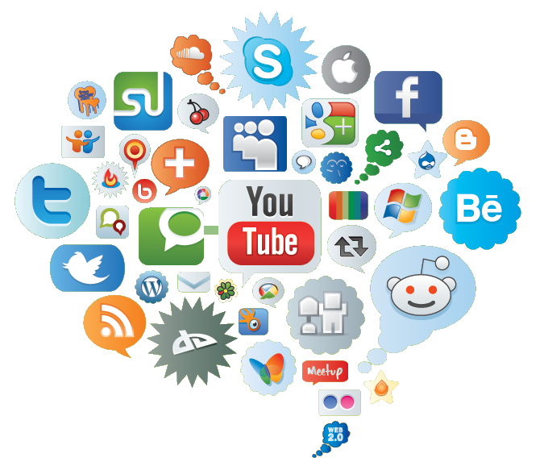

SOCIAL NETWOTK
Cosa sono i social network? A cosa servono i social network? Come si usano i social network? Rispondere a queste tre domande potrebbe essere alquanto scontato per i più giovani. Per chi, invece, è un po’ più avanti con l’età, dare una risposta a queste tre domande potrebbe non essere altrettanto facile. Eccoti allora perché in questo apposito articolo cercherò di chiarirti le idee su cosa sono, su a cosa servono, nonché su come si usano i cosiddetti social network.

SOCIAL NETWORK: COSA SONO, A COSA SERVONO E COME SI USANO
COSA SONO I SOCIAL NETWORK?
Un servizio di rete sociale, solitamente chiamato social media (si pronuncia sòcial mìdia) o social network (si pronuncia sòcial nètuorc, dall’inglese social network service o social networking site, letteralmente servizio di rete sociale o sito di rete sociale), è un servizio offerto mediante Internet, tipicamente fruibile in maniera del tutto gratuita tramite il World Wide Web (si pronuncia uorld uàid ueb) o delle comuni app per dispositivi mobili, il cui unico scopo è quello di facilitare la gestione dei rapporti sociali
consentendo la comunicazione e la condivisione di contenuti digitali attraverso semplici frasi scritte, link vari, brani musicali, immagini o anche video.
In poche parole, quindi, i social network sono dei particolari servizi disponibili online che, a chi li usa, danno la possibilità di comunicare condividendo determinati contenuti di varia natura (in genere testo, immagini, audio e/o video).
COME SI USANO I SOCIAL NETWORK?
Prima di tutto diciamo che non esiste una regola ben precisa su come bisogna usare i social network. Più che altro, infatti, dipende dal tipo di social network che uno decide di utilizzare. In genere, comunque, per entrare a far parte di un determinato social network occorre anzitutto costruire il proprio profilo personale partendo da informazioni alquanto basilari – come nome, cognome e indirizzo email privato – fino ad arrivare poi ai propri interessi e alle proprie passioni, alle esperienze di lavoro passate e alle relative referenze. A questo punto è quindi possibile invitare i propri amici a far parte della propria rete virtuale, i quali a loro volta possono incominciare a fare lo stesso cosicché ci si trova ad allargare la cerchia di contatti con gli amici degli amici e così via idealmente fino a comprendere tutta la popolazione del mondo (a tal proposito esistono tuttavia dei ben precisi limiti che variano in base al social network scelto).
Ad esempio, per poter usare Facebook (si pronuncia fèisbuc), cioè uno dei più famosi social network esistenti, bisogna semplicemente condividere qualcosa – come una frase, un’immagine o un video – sulla quale poi gli altri utenti possono esprimere o meno una propria opinione mediante i cosiddetti Mi piace (per avere un’idea su come creare un account e, in generale, su come si usa Facebook, ti consiglio in ogni caso di collegarti presso questa pagina). Lo stesso discorso vale, grossomodo, anche con Twitter (si pronuncia tuìtter), cioè un altro social network molto famoso fondatore dei cosiddetti hashtag (per avere maggiori informazioni su come utilizzare Twitter ti consiglio comunque di collegarti presso questa pagina).
Oltre a Facebook e a Twitter, una volta c’era anche il meno popolare Google+ (si pronuncia gùgol plas), dell’omonima casa Google, che in sostanza offriva più o meno le stesse funzionalità di Facebook (per maggiori informazioni sul perché è stato chiuso Google+ potresti consultare questa pagina). Naturalmente, oltre a questi, esistono molti altri social network – come ad esempio Instagram, Pinterest, LinkedIn (si pronuncia linct in) e Flickr solo per citarne alcuni – nei quali, in ogni caso, le uniche parole d’ordine da seguire rimangono sempre e comunque la comunicazione, la condivisione e l’interazione con gli altri utenti.
| tipo social |
percentuale |
| WhatsApp |
15,7%/ |
| Instagram |
14,8% |
| Facebook |
14,5% |
| TikTok |
4,3% |